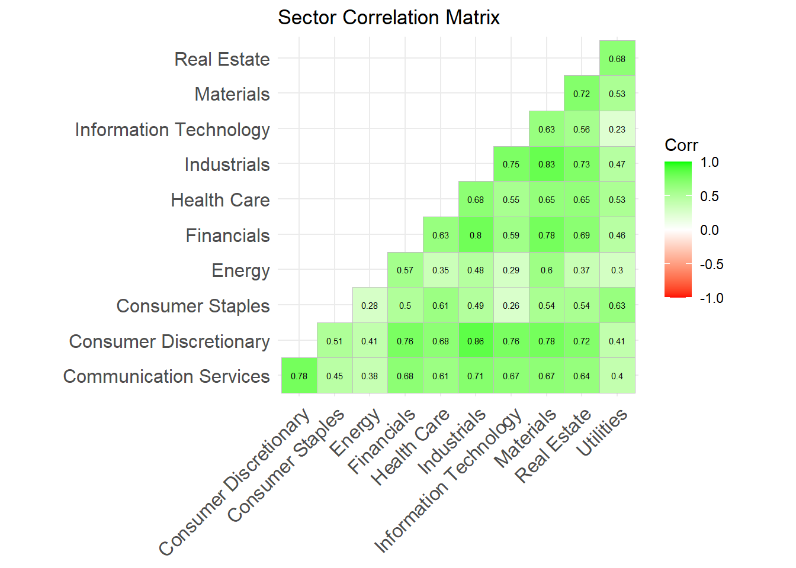

# scrape list of stocks currently in the S&P 500sp500_url ="https://en.wikipedia.org/wiki/List_of_S%26P_500_companies"sp500_url =read_html(sp500_url)data = sp500_url |>html_element("table") |>html_table()colnames(data) =c('symbol','company','gics_sector','gics_sub_industry','headquarters','date_added','cik','founded')# create a list of tickerstickers =sort(data$symbol)data |>head()
# A tibble: 6 × 8
symbol company gics_sector gics_sub_industry headquarters date_added cik
<chr> <chr> <chr> <chr> <chr> <chr> <int>
1 MMM 3M Industrials Industrial Congl… Saint Paul,… 1957-03-04 6.67e4
2 AOS A. O. Smi… Industrials Building Products Milwaukee, … 2017-07-26 9.11e4
3 ABT Abbott La… Health Care Health Care Equi… North Chica… 1957-03-04 1.8 e3
4 ABBV AbbVie Health Care Biotechnology North Chica… 2012-12-31 1.55e6
5 ACN Accenture Informatio… IT Consulting & … Dublin, Ire… 2011-07-06 1.47e6
6 ADBE Adobe Inc. Informatio… Application Soft… San Jose, C… 1997-05-05 7.96e5
# ℹ 1 more variable: founded <chr>
data |>count(gics_sector) |>ggplot(aes(x=reorder(gics_sector,n),y=n))+geom_bar(stat='identity')+coord_flip()+labs(title ="S&P500 Stocks by Sector",y="Count",x="Sector")
The S&P500 which tracks the performance of the 500 largest companies in the US is weighted towards industrial, financial and technology stocks.
Warning: There were 3 warnings in `dplyr::mutate()`.
The first warning was:
ℹ In argument: `data.. = purrr::map(...)`.
Caused by warning:
! x = 'BF.B', get = 'stock.prices': Error in getSymbols.yahoo(Symbols = "BF.B", env = <environment>, verbose = FALSE, : Unable to import "BF.B".
attempt to set an attribute on NULL
Removing BF.B.
ℹ Run `dplyr::last_dplyr_warnings()` to see the 2 remaining warnings.
`summarise()` has grouped output by 'gics_sector'. You can override using the
`.groups` argument.

From the correlation matrix, we can see that sectors like IT show a low correlation with sectors like Energy, Consumer Staples and Utilities. Historically this holds true since IT stocks are mainly growth stocks that benefit when interest rates are low meanwhile Energy, Consumer Staples and Utilities are more mature value stocks that have consistent performance regardless of the interest-rate environment.
The risk of a specific stock can be influenced by several factors ranging from company specific risks to risks present in the country it operates in. Investors expect to be compensated for taking on additional risk with higher returns.
Modern Portfolio Theory, seeks to minimize the risk of a portfolio through diversification, i.e. by picking a basket of uncorrelated assets to minimize variance and maximize risk-adjusted return.
Industry and Company risk can be minimized by holding a broad range of equities across various industries.
Market risk can be minimized by holding non-equity instruments like treasury bills and/or commodities like gold that act as a safe haven when markets are in decline.
Country risk is a bit more complicated, some advocate for owning companies that operate in different countries while critics point out that large US firms conduct business and have supply chains across geographies, so they should have low country specific risk.
For simplicity, this analysis only looks at companies listed in the US market.
We can create a portfolio by selecting top-performers across a range of sectors. For this analysis we decided to construct a portfolio with the below equities and indices.
Equity IT: DELL, NVDA, MU (Micron)
Industrial: GE, UBER
Financials: AXP, JPM
Consumer Discretionary: AMZN, HLT
Energy: TRGP
Healthcare: LLY,BSX
Utilities: NRG
Indices Fixed Income: BND (Bond ETF)
Commodities: GSG (Commodity ETF)
Portfolio Analysis
Get Price Data
tickers =c("DELL","NVDA", "MU", # Tech"GE","UBER", # Industrials"AXP","JPM", # Financials"AMZN","HLT", # Consumer Discretionary"TRGP", # Energy"LLY","BSX", # Health Care"NRG", # Utilities"BND","GSG"# Fixed-Income and Commodity ETFs)getSymbols(tickers, from ="2023-01-01", to ="2024-05-31")
prices <-do.call(merge, lapply(tickers, function(t) Ad(get(t))))returns <-na.omit(Return.calculate(prices))tickers <-c("SPY") # S&P500 as benchmarkgetSymbols(tickers, from ="2023-01-01", to ="2024-05-31")
An equal weighted portfolio across sectors offers nearly twice the market return for similar draw down leading to a 2x difference in Sharpe Ratio (risk-adjusted return)
Minimum Variance Portfolio
cov_matrix <-cov(returns)n_assets <-ncol(returns)# Dmat and dvec for quadprog (minimize (1/2) x' D x - d' x)Dmat <-2* cov_matrixdvec <-rep(0, n_assets)# Constraints: sum of weights = 1, weights >= 0 (no short selling)Amat <-cbind(rep(1, n_assets), diag(n_assets))bvec <-c(1, rep(0, n_assets))# Solve QPsol <-solve.QP(Dmat, dvec, Amat, bvec, meq =1)# Optimal weightsopt_weights <- sol$solutionnames(opt_weights) <-colnames(returns)portfolio_returns =Return.portfolio(returns, weights = opt_weights)common_dates =index(portfolio_returns)[index(portfolio_returns) %in%index(spy_returns)]portfolio_returns_aligned = portfolio_returns[common_dates]spy_returns_aligned = spy_returns[common_dates]combined_returns=merge.xts(portfolio_returns_aligned, spy_returns_aligned)colnames(combined_returns) =c("Portfolio", "S&P 500")chart.CumReturns(combined_returns,wealth.index = T,main ="Portfolio vs S&P500",legend.loc ="topleft")
Portfolio S&P 500
Annualized Sharpe Ratio (Rf=0%) 1.889463 2.146386
While the optimized portfolio has a lower annualized return, it also shows limited draw down, offering a less volatile growth rate compared to the broader market